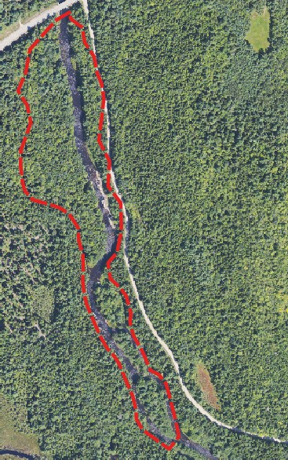
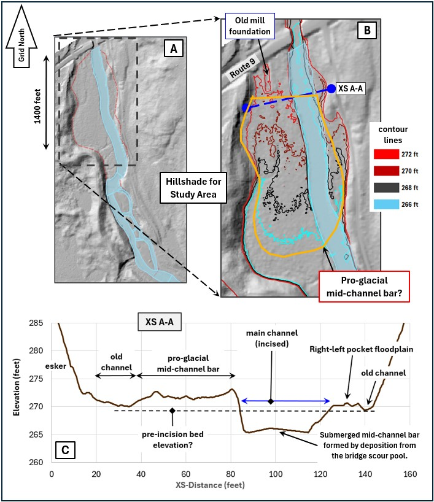

The portion of the Narraguagus River from the Route 9 bridge to
the Beddington Lake delta has a large (relative to this part of the river)
floodplain on river-right and several small pocket floodplains on river-left.
The floodplain and the largest flooplain features were likely developed in a
proglacial, fluvial environment as the Laurentide Ice Sheet retreated to the
interior of Maine. The main channel is thopught to be the product of log drive
era river abuse. Prior to restoration efforts, the main channel appeared to
be over-widened, featureless and heavily armored (see Figure 6 in Homework ).
The heavily armored and embbeded nature of this
portion of the river, means there is very little local sediment movement
and the post logging era river bed is void of in-stream gemorphic units.
Homework 9 is based on the 2017 1-m DEM produced by Noah
Snyder, Ph.D., of Boston College (provided to me by the US Fish & Wildlife
Service), and augmented by the pre-restoration bathymetry survey
(Project SHARE and USFW).

